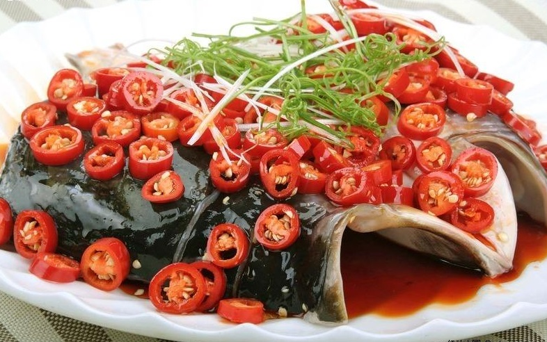

湘菜介绍
湘菜，又叫湖南菜，是中国历史悠久的八大菜系之一，早在汉朝就已经形成菜系。以湘江流域、洞庭湖区和湘西山区三种地方风味为主。 湘菜制作精细，用料上比较广泛，口味多变，品种繁多；色泽上油重色浓，讲求实惠； 品味上注重香辣、香鲜、软嫩；制法上以煨、炖、腊、蒸、炒诸法见称。湘菜的主题是下饭， 其实很多湖南人也是怕辣的，而又要吃那种很辣的， 由辣而产生多吃米饭的结果，所以湘菜主要产生的作用是下饭，像外婆菜就是非常下饭的菜。
湘菜历来重视原料互相搭配，滋味互相渗透。湘菜调味尤重酸辣。因地理位置的关系，湖南气候温和湿润， 故人们多喜食辣椒，用以提神去湿。用酸泡菜作调料，佐以辣椒烹制出来的菜肴，开胃爽口，深受青睐，成为独具特色的地方饮食习俗。 同时，爆炒也是湖南人做菜的拿手好戏。
共同风味是辣味菜和腊味菜。以辣味强烈著称的朝天辣椒，全省各地均有出产，是制作辣味菜的主要原料。 腊肉的制作历史悠久，在中国相传已有两千多年历史。三地区的菜各具特色，但井非截然不同，而是同中存异，异中见同，相互依存，彼此交流。统观全貌，则刀工精细，形味兼美，调味多变，酸辣著称，讲究原汁，技法多样，尤重煨烤。 “日夜江声下洞庭”，随着时代的前进和国家经济的发展，湘菜这朵奇葩，将会开得更加鲜艳夺目。